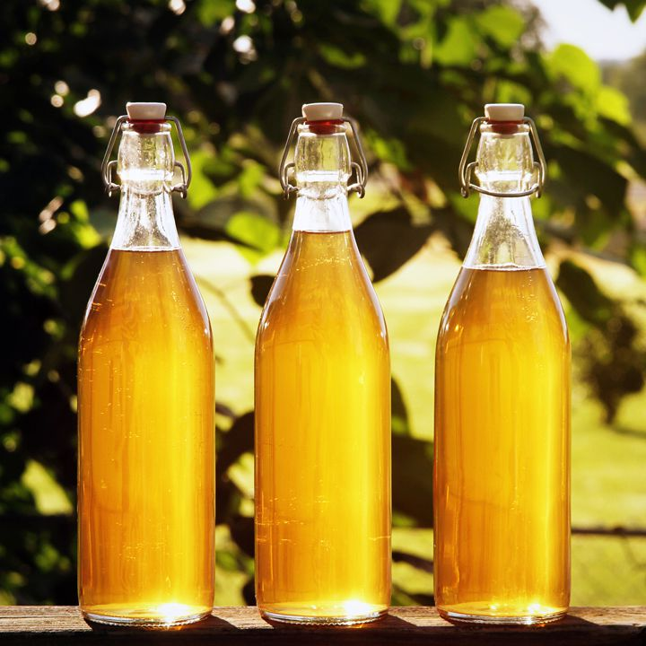

Nectar of the Allfather: Odin's Divine Mead
In the great halls of Valhalla, where mighty warriors feast and tales of valor
echo through eternity, Odin brews his divine mead.
Crafted from the golden nectar of the sacred honeycomb, this elixir sparkles
with the wisdom of the cosmos.
Aged beneath the watchful eye of Yggdrasil, the World Tree, Odin's mead
bestows courage to the fearless and wisdom to the wise.
With every sip, one tastes the essence of the nine realms, a taste of the
divine, and a promise of eternal glory in the halls of the gods.
Ingredients
- Honey from the Golden Honeycomb of the Bifrost Bees
- Water drawn from the Wellspring of Wisdom in Asgard
- Dew collected from the Leaves of Yggdrasil, the World Tree
- Dragonfire-infused Grains of Time
- Magical Herbs from the Gardens of Idunn, Goddess of Youth
- Whispers of Valkyrie's Valor
- Frost Giant's Ice Crystals (for that chilling taste of the Void)
- A pinch of Odin's Wisdom (a dash of his one-eye'd insight)
- Stardust from the Far Reaches of the Cosmos
- Thunderstruck Lightning (for that electrifying finish)
Steps
- Gather mystical ingredients.
- Combine honey, water, and herbs.
- Brew over mystical fire.
- Add Dragonfire Grains and Valor whispers.
- Cool the elixir.
- Sprinkle stardust and Thunderstruck Lightning.
- Serve Odin's divine mead.